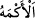
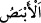

Yine rivayet olunur ki Allah Teâlâ, Hz. Îsâ’yı otuz yaşındayken peygamber olarak
göndermişti. Bu görevini otuz ay sürdürdükten sonra Allah Teâlâ onu kendisine
yükseltti. İşte ahir zamanda bu yaşta inecek ve daha sonra olgunluk çağına girecektir.
“Sana Kitab’ı, hikmeti, Tevrat’ı ve İncil’i öğretmiştim.” Kitaptan maksat, Allah
tarafından indirilen kitaplardır. Tevrat ve İncil ise, “kitap” mefhumu içinde yer aldıkları
halde ayrıca zikredilmişlerdir. Bu, onların değerlerini göstermek içindir. Burada
“hikmet”ten murâd ise indirilmiş kitapları, en ince sırlarına kadar bilip kavramaktır.
Fakat “hikmet”in, bu bilgileri bilmek ve gereğiyle amel etmek suretiyle nefsin kemâle
ermesi olduğu da söylenmiştir.
“Benim iznimle çamurdan kuş şeklinde bir şey yapıyordun da ona üflüyordun,
hemen benim iznimle o bir kuş oluyordu.” Buradaki yaratma (halk) aslında Allah
Teâlâ’ya aittir. Sebeplerine teşebbüs ettiği vakit Hz. Îsâ’nın elinde zâhir olmaktadır.
Nitekim Hz. Meryem’e “üfleme” işi Cebrail (a.s.) tarafından yapılmıştır. Yaratma ise
Allah Teâlâ’ya aittir.
Hz. Îsâ’nın kavmi onu sıkıştırmak ve hakkı kabul etmemek gayesiyle şöyle bir talepte
bulundular: “Eğer dâvânda sadık isen bize bir yarasa yarat ve daha sonra ona ruh ver de
görelim!” Bunun üzerine Hz. Îsâ bir parça çamur aldı, onu yarasa şekline soktu ve ona
üfledi. Bir de baktılar ki yarasa havada uçuyor!
Bu insanlar Hz. İsa’dan yarasa yaratmasını özellikle istemişlerdi. Çünkü yarasa diğer
mahlukattan farklı garipliklere sahiptir. Mesela yarasa sadece et ve kandan ibarettir.
Tüyleri olmaksızın uçar. Kuşlar gibi yumurtlayarak değil de kara hayvanları gibi
doğurarak ürer. İçinden süt çıkan bir göğsü vardır. Ne gün ışığında ne de zifiri
karanlıkta görür. Ancak güneş battıktan sonra bir saat ve tan ağardıktan sonra henüz
hava tam aydınlanmadan önce bir saat olmak üzere toplam iki saat süreyle gözleri
görebilir. İnsanlar gibi güler. Kadınların halleri gibi hayız olur.
Bu kişiler Hz. Îsâ’nın elinden böyle bir yarasanın çıktığını görünce güldüler ve “Bu
bir sihirdir.” dediler.
“Yine benim iznimle anadan doğma körü ve alacalıyı iyileştiriyordun.” Âyetteki “” kör olarak doğan kişidir. “”ise alaca hastalığına yakalanmış, vücudu beyaz
beyaz beneklerle kaplı kişiye denir. Bu kişinin vücudundaki beyaz beneklere iğne
batırılsa, kan çıkmaz. Tedavisi de yoktur. Bu iki hastalık özellikle seçilerek
zikredilmiştir. Çünkü ikisi de doktorları âciz bırakan hastalıklardır.
Bu konu Mesnevî’de şöyle yer almaktadır:
İsa’nın ibadet yeri, gönül ehlinin sofrasıdır
Kendine gel ey derde mübtelâ, sakın bu kapıyı bırakma
Halk her taraftan toplanırdı;
Kör, çolak, kötürüm, topal, hepsi
İsa, evradını bitirince
O güzel gidişli, kuşluk vakti dışarı çıkar